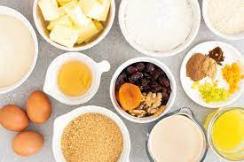

¿Do you like some Pudding
Vanilla pudding is a creamy, sweet and very smooth dessert, ideal to complement heavier meals or serve when we have guests. This simple recipe offers us the possibility of varying some of its ingredients and making it with multiple flavors, such as chocolate, apple or cookies. If you like the idea and want to try this delicious dessert, keep reading this OneHowTo article and discover how to make vanilla pudding.
ingredients needed
- 1/2 l of milk
- 250g sugar
- 250 g corn flour
- 1/2 cup of water
- 1 egg yolk
- Vanilla essence or powder

Steps
- To start preparing the homemade vanilla pudding you must mix the flour and sugar in a container. It is recommended that the flour be sifted so that it dissolves better later. Then, take a saucepan or pot and add the milk, water and the flour and sugar mixture. Heat over medium heat and stir occasionally.
- It is very important that you stir the mixture frequently to prevent the milk from burning. When it starts to boil, lower the heat and add the vanilla. You can use vanilla essence, powder format or two pods, whatever you like best. Likewise, the amount is to taste, we will use a tablespoon of essence
- While the ingredients are dissolving over low heat, beat the egg yolk until it becomes foamy and add it to the mixture. You will need to constantly stir the vanilla pudding batter until it thickens completely, it may take a few minutes.
- When the mixture has thickened and reached the right consistency, turn off the heat and let it cool slightly. If there are any lumps left, you can beat it a little with the electric beaters, at low speed since we don't want it to become liquid. Then, pour the mixture into the molds and place them in the refrigerator. Vanilla pudding is a dessert that is served cold. You will have to leave it for two or three hours for it to set.
- And ready! You now have your vanilla pudding finished. When they are cold and well set, you can now serve them and eat them. As you can see, it is a very simple and delicious recipe, go ahead and prepare it and surprise the little ones in the house. If you wish, you can decorate them on top by adding some colored shavings or even chocolate or strawberry syrup.